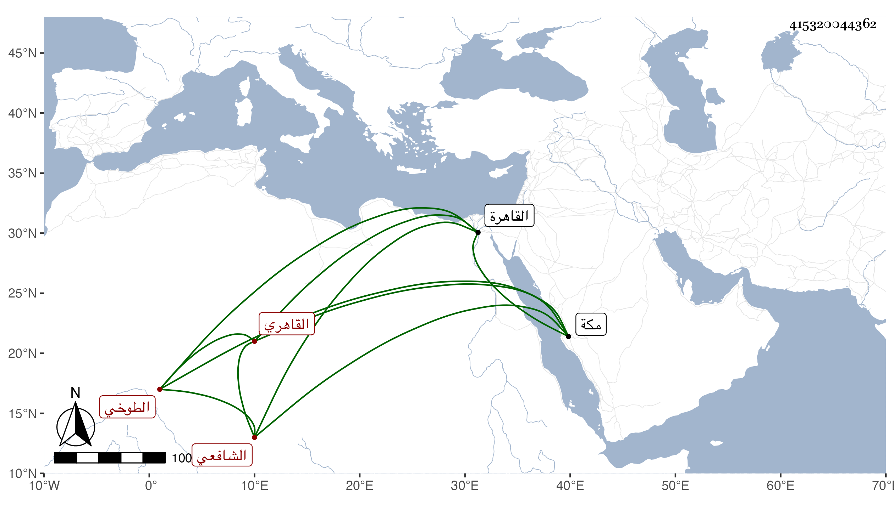

0902Sakhawi.DawLamic.ITO20230111-ara1.EIS1600.415320044362
Biography ID: 415320044362
126
محمد بن عبد القادر بن محمد بن محمد بن علي كمال الدين بن المحيوي الطوخي الأصل القاهري الشافعي الماضي أبوه وأخوه علي . ولد في المحرم سنة خمسين وثمانمائة بالقاهرة وحضر القاياتي عقيقته فكان آخر مجتمع حضر فيه ، ونشأ فحفظ القرآن والعمدة والتنقيح للولي العراقي وعرض علي في جملة الجماعة كالعلم البلقيني والمناوي وحضر عند العبادي والجوجري والمقسي وغيرهم ، وحج مع أبيه وخطب بالأزهر وباشر في الحسنية ، وناب في القضاء عن العلم بطوخ وغيرها ثم عن المناوي فمن بعده وجلس بجامع الصالح مدة ثم ترك وأقبل على معيشته وسافر لمكة بحرا ومعه زوجته ابنة الجمال يوسف بن نصر الله الحنبلي فوصلها في رجب فحج وجاور حتى السنة التي بعدها سنة تسع وتسعين .
